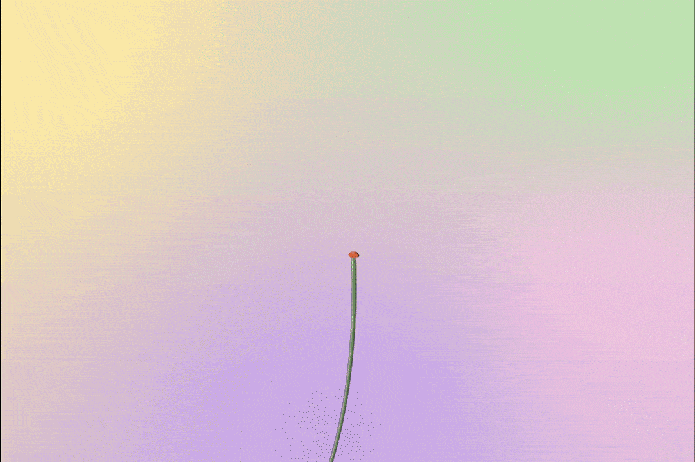
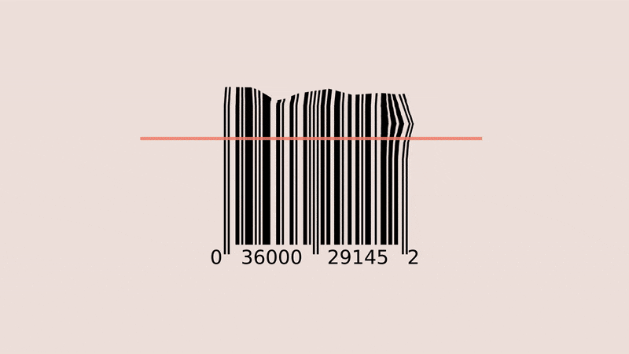
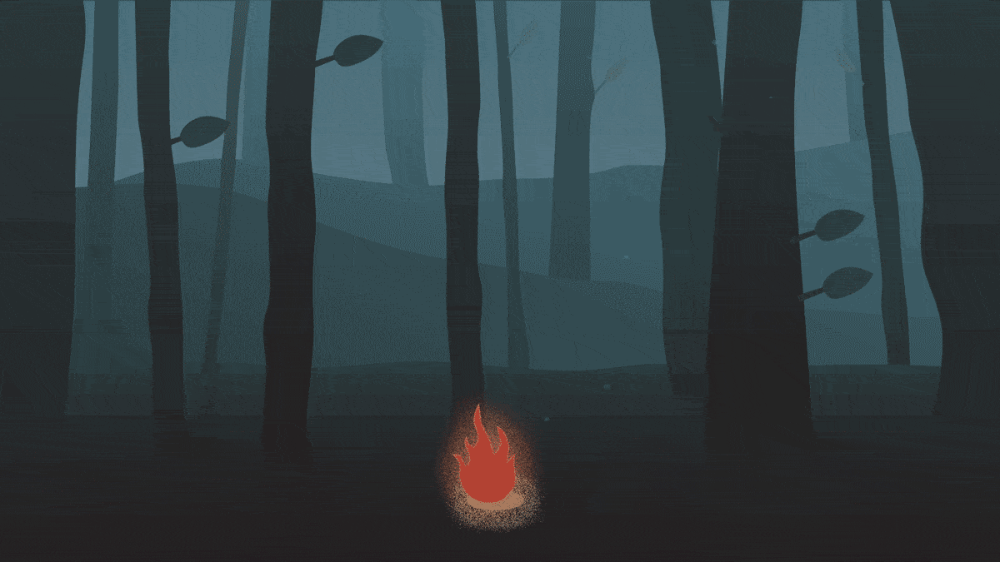

Motion Design
Skills
After Effects / Cinema 4D
Overview
A selection of motion graphics I created over the past 3 years.
Lotus
Lotus is considered as a symbol of my hometown, Hangzhou, China due to its popularity in the West Lake. I drew and created this short animation at a time when I was really missing my childhood and old home.
Hand Claymation
Even clay can have emotions. In this animation, we follow the bizarre transformation of a piece of clay and eventually end up with a curled up figure. It's made to make you uncomfortable and leave you with a feeling of oddity; it's made to make you stop for a second and think about what it all really means.
Milk
Fire
